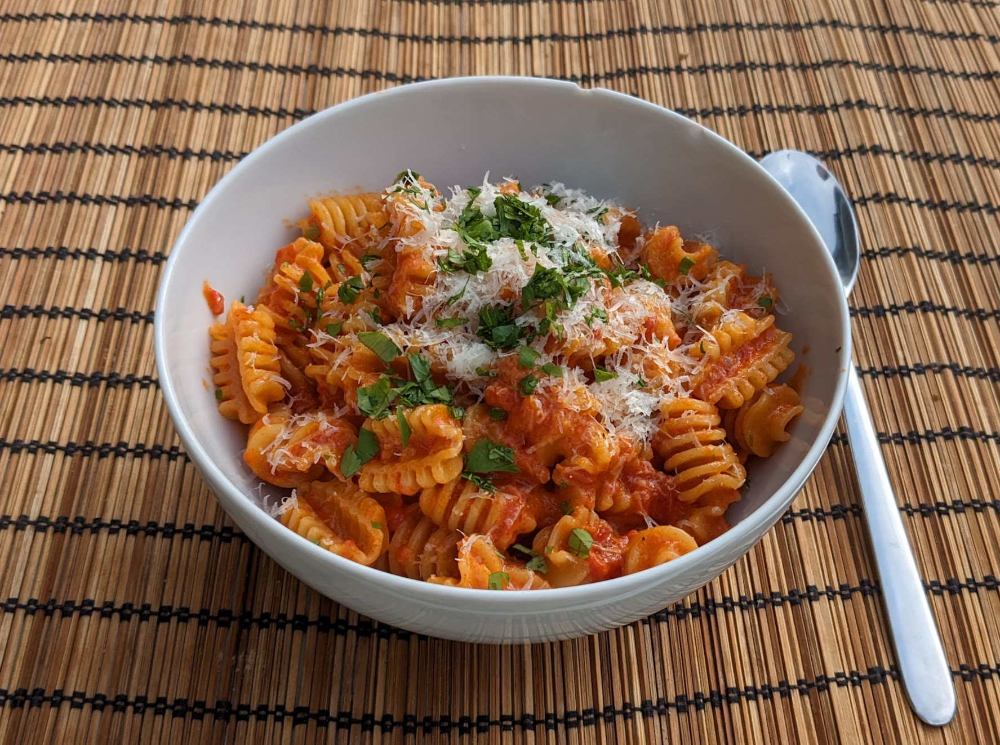

Pâtes chingaderinara

Pour 5 personnes :
- 600g de pâtes
- 50g de beurre
- 50mL d'huile d'olive
- Deux échalotes
- Quatre gousses d'ail
- 120mL de mezcal
- Quatre cuillères à soupe de gochujang (une pâte de piment coréen)
- Deux boîtes (de 400mL chaque) de tomates concassées (idéalement, finement)
- 250mL de crème
- Un peu de parmesan
- Quelques branches d'herbes fraîches (persil, basilic, ou coriandre)
- Sel, poivre
- Éplucher et émincer finement les échalotes, éplucher et écraser l'ail.
- Faire chauffer le beurre et l'huile d'olive dans une grande poêle ou une casserole à bords pas trop hauts, si possible en acier (les revêtements antiadhésifs risquent de souffrir un peu avec l'acidité de la sauce). Ajouter les échalotes et l'ail deux minutes à feu fort, jusqu'à ce que le tout soit translucide.
- Ajouter le mezcal et le gochujang, laisser cuire deux minutes de plus à feu fort.
- Ajouter les tomates concassées, saler, poivrer, attendre que ça bouille, puis baisser le feu pour que ça mijote.
- Faire cuire les pâtes, et à mi-cuisson, ajouter la crème dans la sauce. Pendant ce temps, râper le parmesan, et rincer et émincer les herbes.
- Égoutter les pâtes, et les mélanger à la sauce. Garnir de parmesan et d'herbes, servir immédiatement.
Retour à la liste des recettes